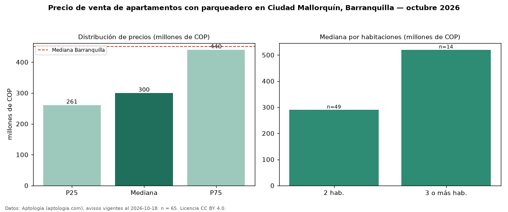

Precio de venta de apartamentos con parqueadero en Ciudad Mallorquín, Barranquilla — octubre 2026
COP 300 millones es el precio mediano de apartamentos con parqueadero en venta en Ciudad Mallorquín, Barranquilla (n = 65 avisos). Frente a la mediana de todos los apartamentos en venta de Ciudad Mallorquín (COP 277 millones, n = 123), queda 8 % por encima; este segmento reúne el 53 % de esos avisos. Por metro cuadrado, la mediana es COP 5,25 millones/m² (n = 65), 6 % por encima del conjunto de referencia (COP 4,97 millones/m²). El área mediana anunciada es 58 m². El segmento con más oferta es el de 2 habitaciones (49 avisos, mediana COP 290 millones); pasar de 2 habitaciones a 3 o más habitaciones cambia la mediana +79 %. La administración mediana declarada es COP 220.000 al mes (n = 40). El estrato más frecuente es 3 (52 % de los avisos con estrato). La mediana de todos los apartamentos en venta de Barranquilla es COP 450 millones (−33 % de diferencia). Datos: Aptología (aptologia.com), CC BY 4.0 — https://www.aptologia.com/venta/barranquilla/ciudad-mallorquin. Archivos: PDF, CSV con las cifras y gráfica PNG.

| Avisos únicos | 65 |
|---|---|
| Percentil 25 | COP 261.000.000 |
| Mediana | COP 300.000.000 |
| Percentil 75 | COP 440.000.000 |
| Mediana por m² | COP 5.250.000 |
Fuente: avisos vigentes de portales inmobiliarios recopilados por Aptología, deduplicados (mínimo 30 avisos únicos por celda). Precios pedidos, no cerrados. Fecha: 2026-10-18.